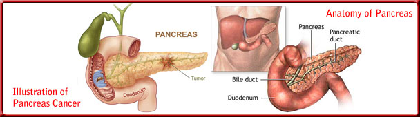

In the Tumor, Node, Metastasis (TNM) model, tumor size, lymph node status, and metastasis are measured separately, each with its own number scale.
For tumor (T) size: T1 denotes a tumor size less than 2 cm across in any direction, T2 denotes a tumor larger than 2 cm across, T3 denotes a tumor that has started to grow into the duodenum and bile ducts that surround the pancreas, T4 denotes that the tumor has invaded the spleen, large intestine, and major blood vessels
For lymph node (N) status:
N0 indicates that there are no lymph nodes containing cancer, N1 indicates that there are lymph nodes containing cancer, and therefore, the tumor has likely metastasized beyond the pancreas.
For metastasis (M) status:
M0 indicates that the tumor has not spread M1 indicates that it has spread.
 TThe second model of pancreatic cancer has 4 numbered stages, as follows:
Stage I. The tumor has not progressed outside of the pancreas. The TNM equivalent would be T1 or 2, N0, M0, meaning that there has been no spread, and that the tumor is relatively small.
Stage II. The tumor has grown into nearby tissues and perhaps the duodenum. Lymph nodes are not affected. The TNM equivalent would be T3, N0, M0.
Stage III. The tumor may be quite large and has spread to the lymph node system, and thus is capable of spread to other organs. The TNM equivalent would be T1–3, N1, M0.
Stage IV. This stage is often divided into 2 sub-stages: Stage IVA describes a situation in which cancer has grown into nearby organs, including the spleen and/or stomach, as well as large blood vessels. The TNM equivalent would be T4, N1 or 2, M0. Stage IVB describes a situation in which cancer has spread to other organs, such as the liver or lungs, with a TNM equivalent of T1–4, N0 or 1, M1.